中国・H-01A隔壁
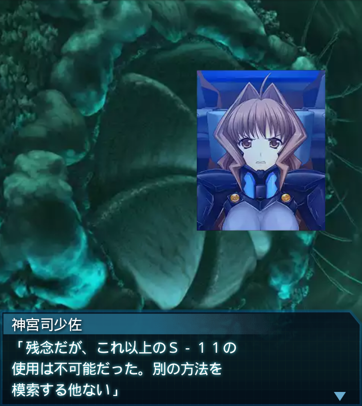
神宮司少佐
「残念だが、これ以上のＳ－１１の
使用は不可能だった。別の方法を
模索する他ない」
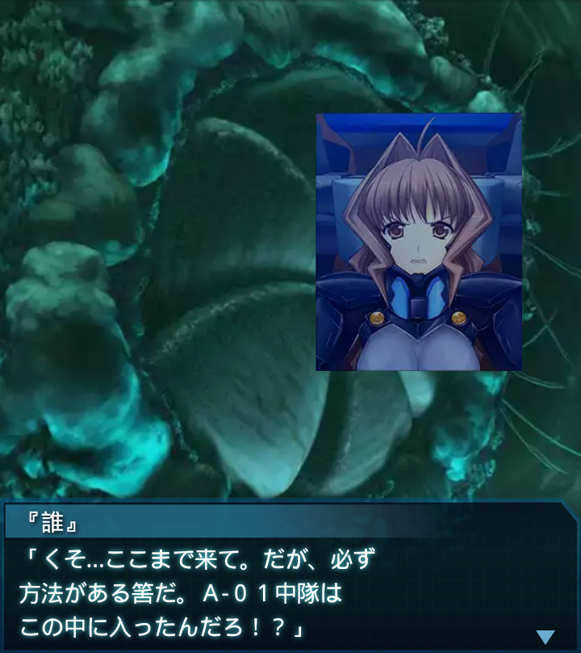
『誰』
「くそ…ここまで来て。だが、必ず
方法がある筈だ。Ａ-０１中隊は
この中に入ったんだろ！？」
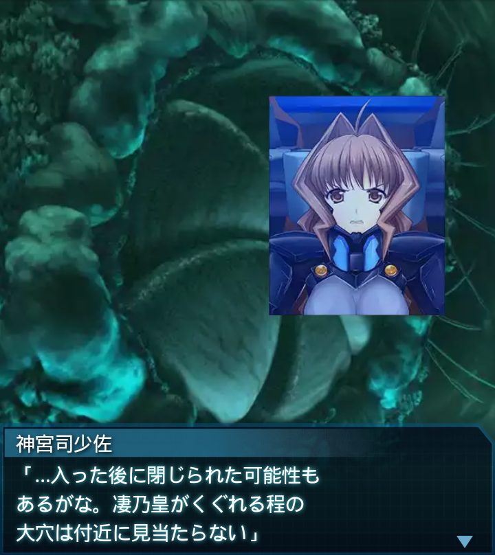
神宮司少佐
「…入った後に閉じられた可能性も
あるがな。凄乃皇がくぐれる程の
大穴は付近に見当たらない」
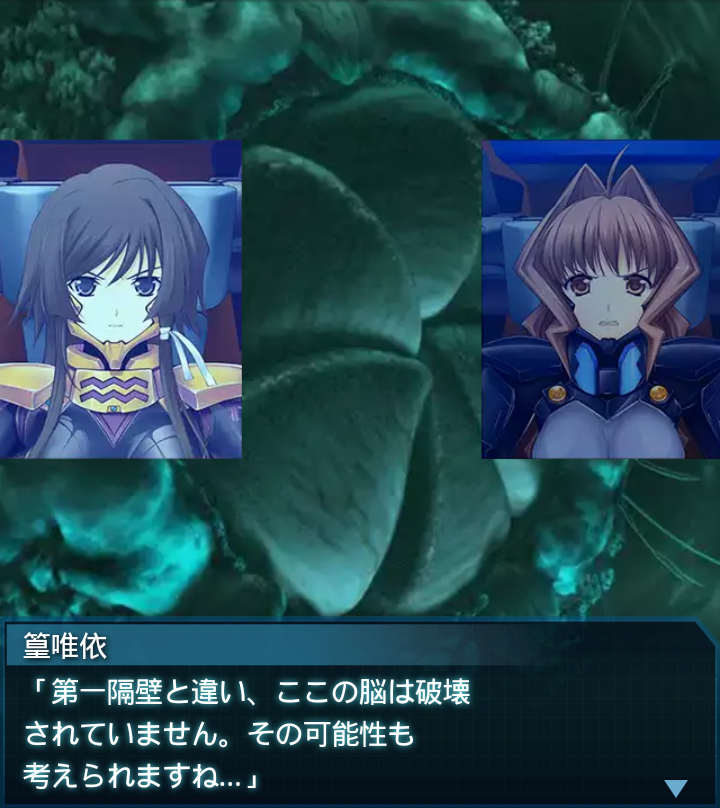
篁唯依
「第一隔壁と違い、ここの脳は破壊
されていません。その可能性も
考えられますね…」
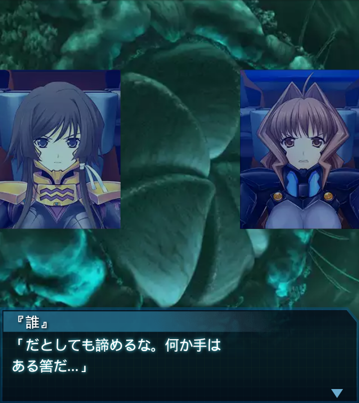
『誰』
「だとしても諦めるな。何か手は
ある筈だ…」
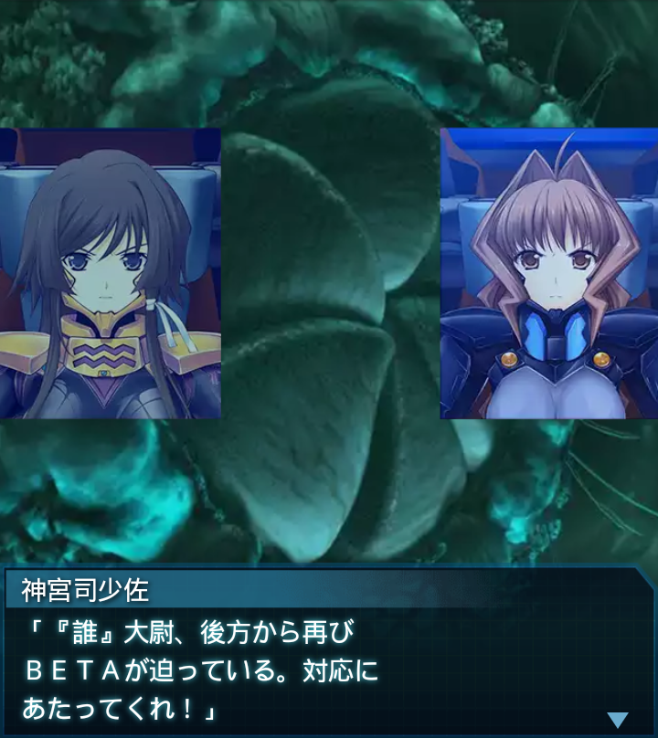
神宮司少佐
「『誰』大尉、後方から再び
ＢＥＴＡが迫っている。対応に
あたってくれ！」
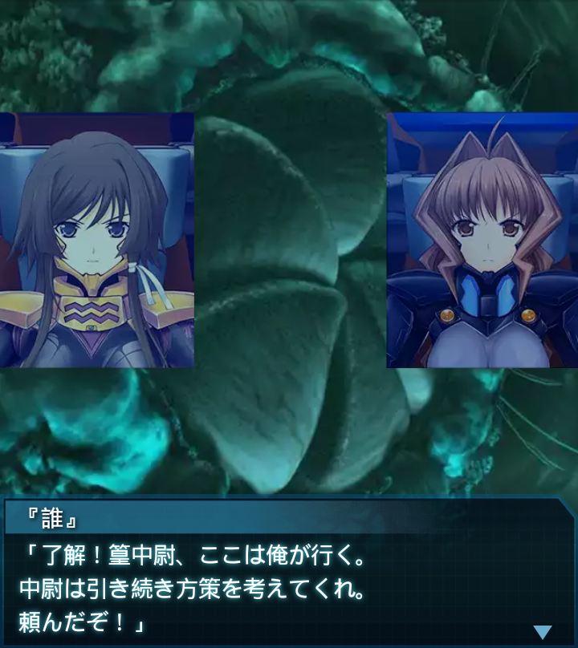
『誰』
「了解！篁中尉、ここは俺が行く。
中尉は引き続き方策を考えてくれ。
頼んだぞ！」
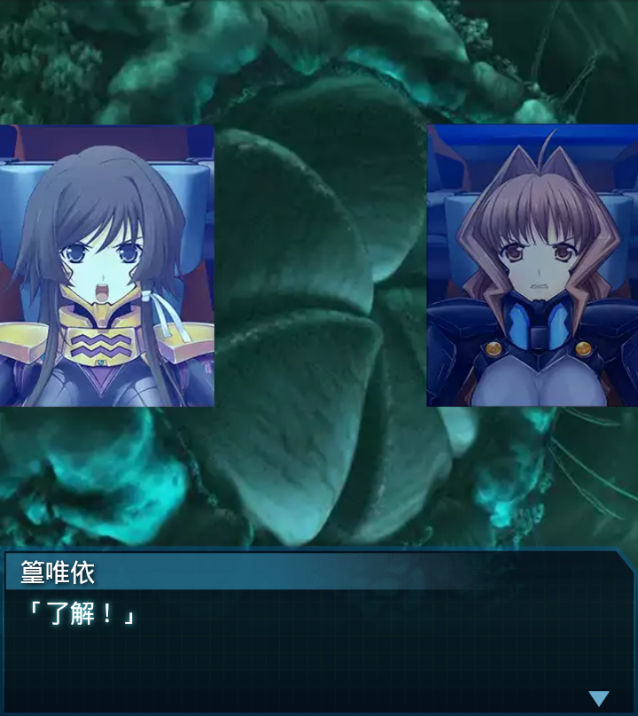
篁唯依
「了解！」
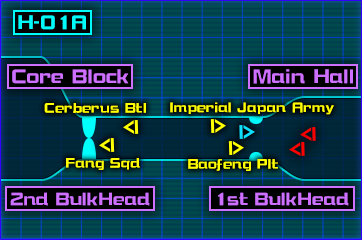
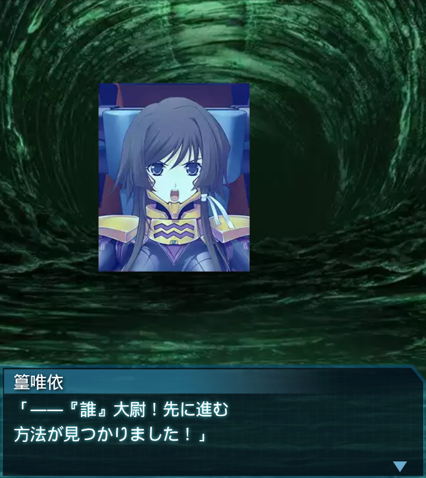
篁唯依
「――『誰』大尉！先に進む
方法が見つかりました！」
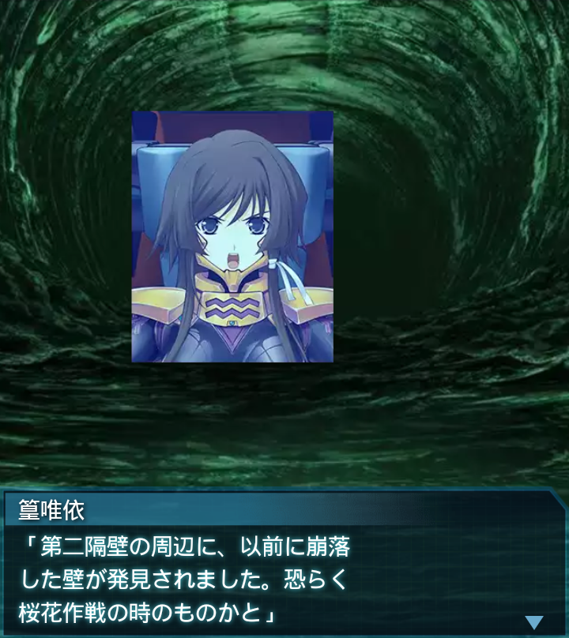
篁唯依
「第二隔壁の周辺に、以前に崩落
した壁が発見されました。恐らく
桜花作戦の時のものかと」
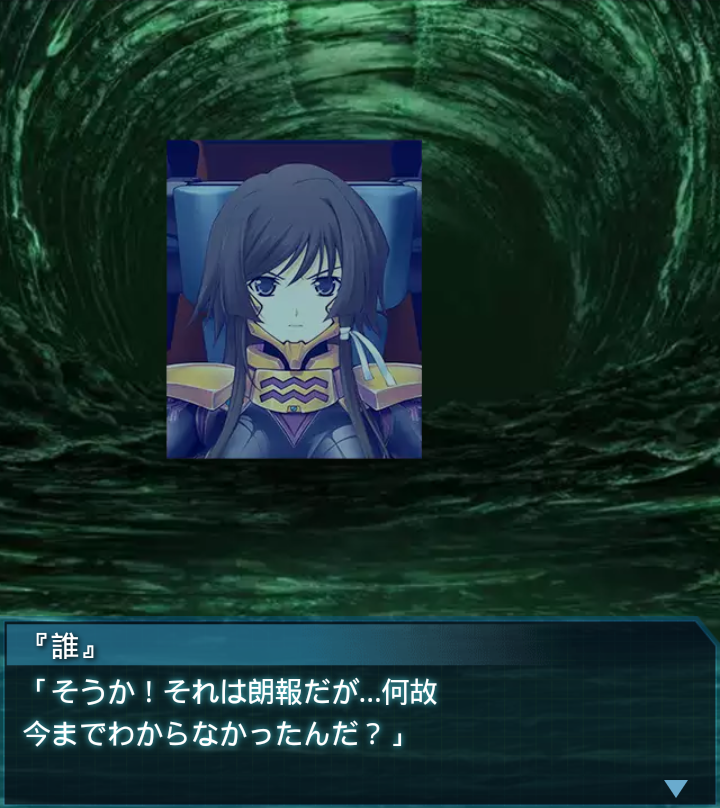
『誰』
「そうか！それは朗報だが…何故
今までわからなかったんだ？」
篁唯依
「世界融合の影響です。内壁が
多層化していた為に最初の計算で
判明しなかったんです」
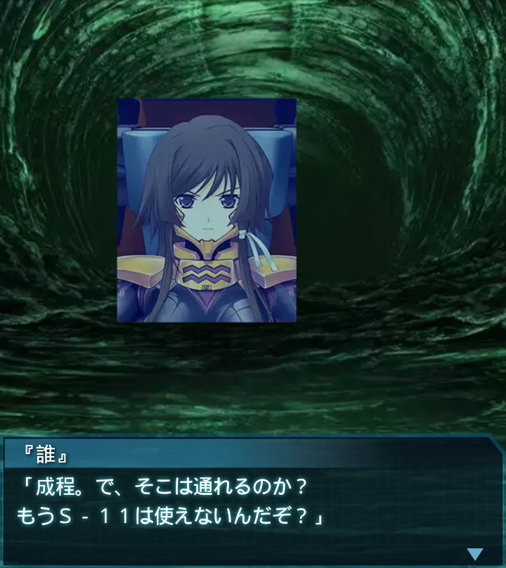
『誰』
「成程。で、そこは通れるのか？
もうＳ－１１は使えないんだぞ？」
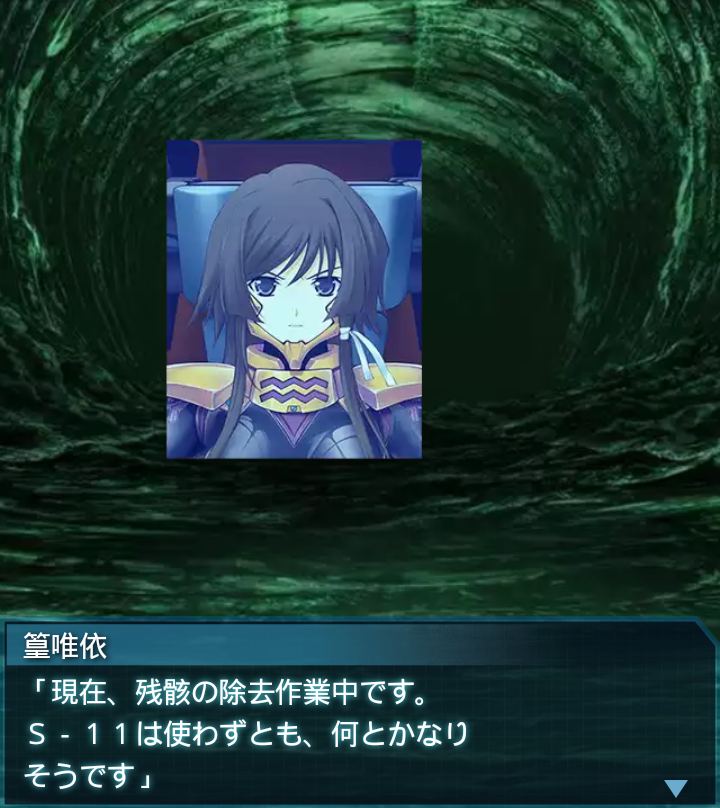
篁唯依
「現在、残骸の除去作業中です。
Ｓ－１１は使わずとも、何とかなり
そうです」
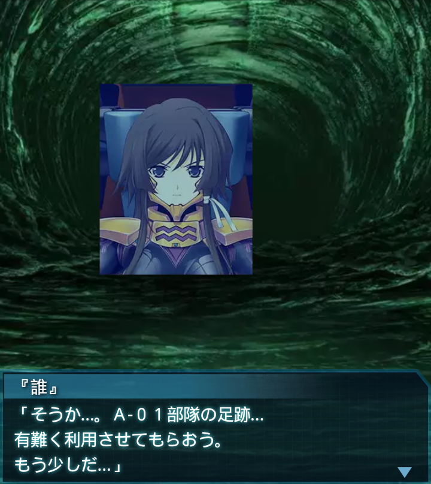
『誰』
「そうか…。Ａ-０１部隊の足跡…
有難く利用させてもらおう。
もう少しだ…」